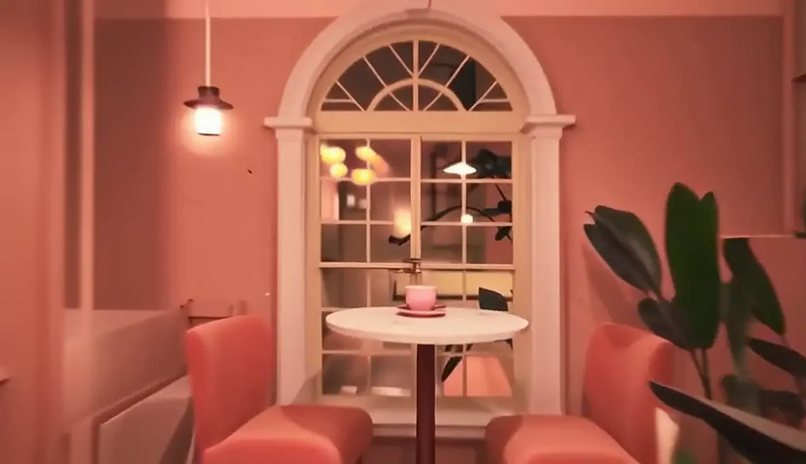
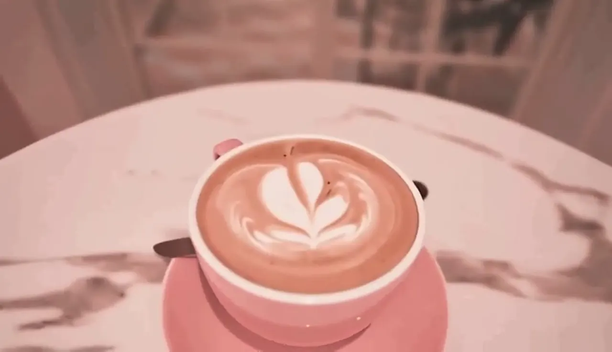
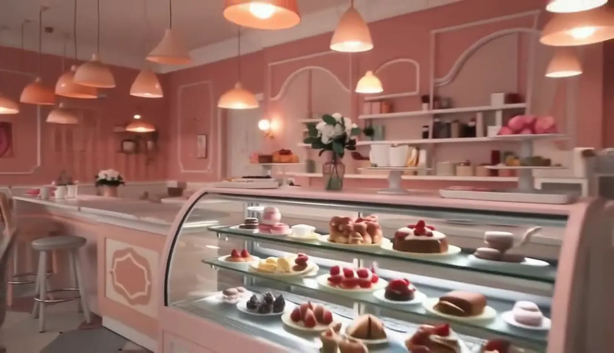
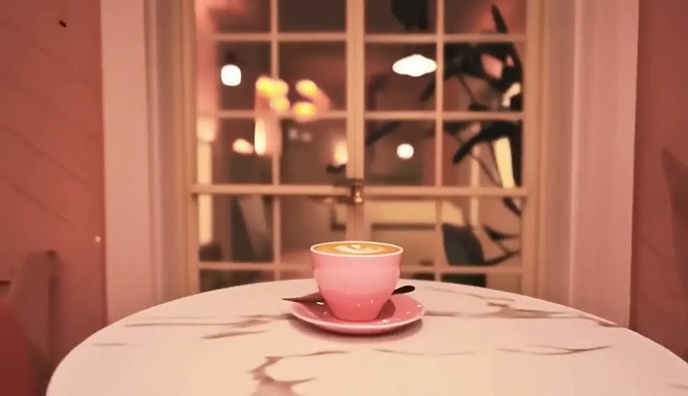

01 · The room
Pink walls, soft lamps
Forty eight seats, velvet chairs and an arched window that catches the last of the evening light.
Coffee, cake & slow evenings in a little pink house in Koregaon Park.
Scroll to step inside ↓
Come in,
the lamps are on.
Est. 2019
Six tables, one espresso machine, a lot of pink paint.
That is how La Brew began. Today the same room seats forty eight, but the chairs still don't match and the window table is still the first one to go.
House signature
The Rose Latte
Double shot of our house blend, steamed milk with a whisper of rose and cardamom, poured into a heart every single time.
₹260
And when the sun goes down
the garden lights up.
Fairy lights, pink blossoms and twelve seats under the evening sky. Open till 11:30 on weekends.
We keep the lights low, the music soft and the refills coming. Bring a book, a friend or nothing at all.

01 · The room
Forty eight seats, velvet chairs and an arched window that catches the last of the evening light.

02 · The cup
A house blend from small farms in Chikmagalur, roasted in small batches every week.

03 · The counter
Macarons, shortcakes and croissants made in the back kitchen every morning, gone by evening.
2019
the year we opened
48
seats, none matching
14
bakes on the counter
86,000
cups poured last year
Kind words
“The rose latte is the reason I take the long way home.”
“Felt like sitting inside a strawberry milkshake. In a good way.”
“Came for one coffee, stayed for three hours and two shortcakes.”

Walk-ins are always welcome. For groups or evenings, booking ahead helps.
Reserve a table